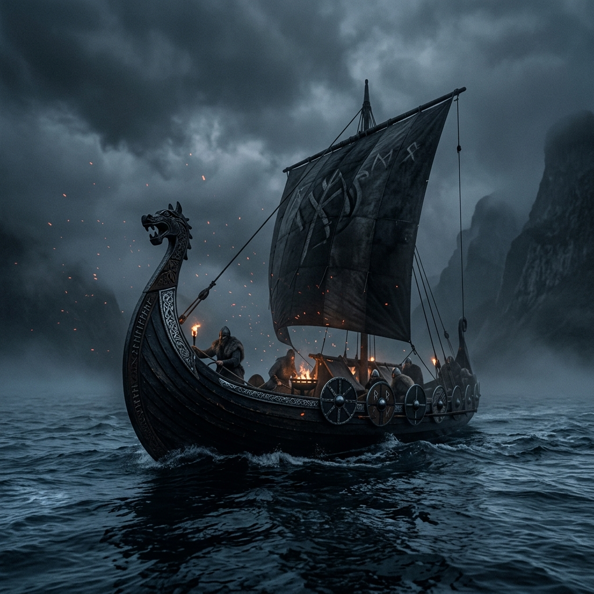

The Viking Age
Historical Roots
The television series is broadly based on the legendary Viking chieftain Ragnar Lothbrok, pulling heavy inspiration from 13th-century sagas like the Tale of Ragnar Lothbrok and the Gesta Danorum. The true Viking Age spanned from 793 AD to 1066 AD, turning Scandinavian seafarers into fearsome raiders, brilliant traders, and far-reaching explorers.
The Legendary Longships
Crucial to their success were the longships – characterized by their shallow draft, speed, and versatility. Able to cross violent oceans and glide right up onto sandy shorelines or far upriver, these impressive vessels made the sudden and devastating attacks on places like Lindisfarne possible, sparking an era of Northman dominance.
